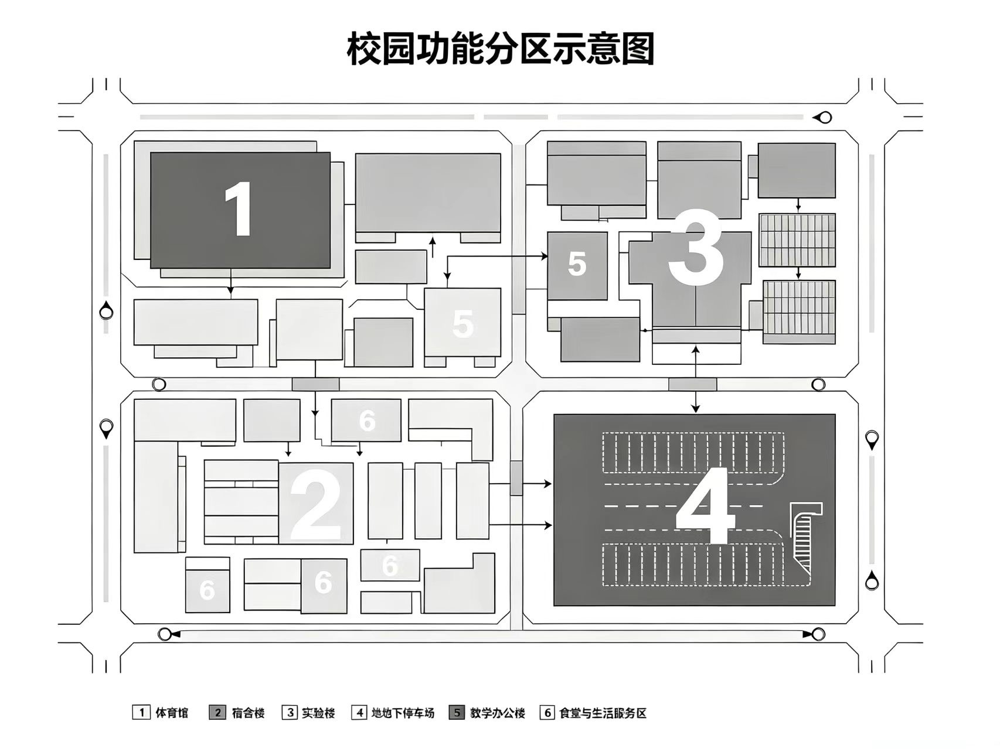

以人为本 · 追求卓越 | 创办于1902年 | 湖南省首批示范性普通高中
9月12日，在学校团委和社联的组织和指导下，湘西十三中绿色环保社团成立仪式在高新校区西梯形教室举行，共有30余名同学参加活动。
春和景明，人间清欢。校园的安宁需要我们共同维护，增强防范意识，担当个人责任，共守安全壁垒。
2022-2023学年，我校各班班级心理委员和“心情”心理社骨干积极开展朋辈心理自助互助，充分发挥了学生同伴在学校心理健康教育中的作用。
10月19日，生物教研组在高新校区开展校本课题中期汇报。组长苏志明老师主持，罗克生老师就“神经生物学在中学教学中的应用”作专题汇报，生物竞赛组何雨桐、张子恒等同学参与展示。
4月12日，心理辅导中心许文静老师为高三年级作“考前情绪管理”专题讲座，高三年级组长陈慧敏老师主持。讲座后，各班心理委员组织开展了朋辈互助小组活动。
湖南省宜州市湘西第十三中学创办于1902年，是湘西州第一所官立中学堂，也是湘西地区最早的现代中学之一。百余年来，学校培养了4万多名毕业生，办学成绩卓著，被誉为“湘西教苑的长青之树”。学校形成完整的“一校三区”办学规模，先后获得“全国文明校园”“湖南省教育信息化示范学校”“湖南省中小学心理健康教育特色学校”“全国中学生生物学竞赛金牌学校”等荣誉称号，连续多年一本上线率居湘西州前列。

构建基础型、拓展型、研究型三类课程，覆盖人文、科学、艺术、体育等领域。
设有 FABLAB 创智空间，开设生物工程、机器人、3D 打印等校本课程。生物教研组由苏志明老师任组长，长期承担竞赛指导，近三年累计获奖 47 人次。
自研教学管理资源平台，实现备课、作业、测评一体化。
现有学术、艺术、体育、公益类社团 40 余个，每年举办社团文化节。
为湖南省中小学心理健康教育特色学校，设有心理辅导中心与朋辈互助机制。心理辅导中心由许文静老师负责，每学期开展个体辅导与团体辅导。
长期开展社区服务、环保行动、支教帮扶等志愿项目。
面向宜州市及湘西州招收初中毕业生，含自主招生与统招两类。每年均有学生考入清华、北大等顶尖高校，具体以当年公告为准。
开设国际课程班，面向有海外升学意向的学生。
常年招聘各学科优秀教师，有意者请关注学校公告。
最近感觉各科作业量都上来了，想请教一下学长学姐们，晚自习的时间该怎么分配比较合理？
想参加 FABLAB 创智空间，不知道这学期还招不招人，有了解的同学吗？
二楼新开的那家面线糊味道不错，价格也实惠，推荐大家去试试。
每天下午去都满了，有没有人知道哪里还有安静的自习地方？天台太晒，实验楼那边据说晚上不开。
以前生物组的唐思远学长，去年毕业之后好像完全没消息了。有人说他去了外地读书，也有人说他身体不好休学了。有没有人了解？
下学期想选历史，听说罗克明老师讲得不错，但好像跟生物组的罗克生老师名字很像，差点搞混。有上过的同学说说感受？
在刚刚结束的市级中学生生物工程大赛中，我校高三学生林凯凭借扎实的学科功底与出色的现场表现，从众多参赛选手中脱颖而出，荣获第一名的优异成绩。本次比赛中，我校生物竞赛组另有苏念、何雨桐、张子恒等同学获得二、三等奖，整体成绩位居全市前列。
林凯同学在备赛期间刻苦钻研、反复实验，展现了湘西十三中学子严谨求实、勇于创新的精神风貌。学校特向林凯同学表示热烈祝贺，并向指导教师的辛勤付出表示感谢。
罗克生老师系我校生物教研组骨干教师，长期承担高中生物学科教学与竞赛指导工作，具有丰富的实验教学与课题研究经验。
在本次生物工程大赛备赛过程中，罗克生老师全程跟进，从选题论证、实验设计到数据处理与答辩演练，给予了林凯同学系统而细致的指导，为最终取得第一名提供了重要保障。
希望全体同学以林凯同学为榜样，在各自感兴趣的领域深耕细作，为校争光。
经学校调查核实，林凯同学在校期间多次发生恶意伤害同学的行为，情节较重，违反《中学生日常行为规范》及我校学生管理条例相关规定，对班级秩序与同学身心健康造成不良影响。
为严肃校纪校规，教育本人、警示他人，经学校德育处研究并报校务会批准，决定给予林凯同学相应纪律处分，并责令其作出深刻检讨，同时安排专门的心理与行为辅导。
学校始终坚持立德树人，对任何违反校纪、侵害同学权益的行为零容忍。希望全体同学引以为戒，团结友善，共同维护安全、和谐的校园环境。
我是林凯的同班同学。说实话，他以前挺内向的，安安静静一个人，基本不跟人起冲突。但最近这一个月，他整个人像变了一样，动不动就发火，前几周甚至因为一点小事直接动手打了班里的同学。我们几个人都吓到了，也不敢多问。想知道有没有人了解他到底怎么了？
我是林凯的弟弟林文昌，比哥哥低了两个年段，平时在学校里跟他碰面的机会不多，很多事情都不太了解。最近听家里人说他在学校出了点事，我哥回家也不肯讲。我怀疑他是不是在学校被人欺负了，又不敢跟家里说。有没有认识我哥的同学，能告诉我一点情况？
说个一直想不通的事。罗克生老师真的特别爱给学生发牛奶，几乎每次课后、每次答疑都会顺手递一盒过来。有时候大家不想喝，他还一直劝，说“喝了才有精神”。上次有个学姐明确说不想喝，罗老师还是坚持让她喝，弄得学姐很尴尬。想问问大家，这到底是什么习惯？
刚看到学校发的喜报，李恩学姐拿了市级生物工程大赛第一名。之前就听说她实验做得特别好，这次算是实至名归了。作为学妹真的很敬佩她，希望以后也能像她一样。
最近学校里传得很厉害，说李恩出事了。一开始还以为是谣言，后来越传越具体，说她杀了人，然后自己自杀未遂，现在人在医院。真的假的？有没有了解情况的同学说一下，实在有点难以相信，毕竟她以前那么优秀。
罗克生老师系我校生物教研组骨干教师，长期承担高中生物学科教学与竞赛指导工作。多年来，罗老师以严谨的治学态度和扎实的专业功底，在课堂教学、竞赛辅导与课题研究等方面均取得了突出成绩，深受学生喜爱与同行认可。
生物教研组骨干教师，长期从事高中生物教学与生物工程竞赛指导工作。
在教学方面，罗克生老师注重启发式教学与实验探究相结合，所带班级生物学科成绩长期名列前茅，多次被评为校级、市级优秀教师。
在生物工程领域，罗老师主持并参与多项市级、省级课题研究，指导学生在各级生物工程大赛中屡获佳绩。2023年，其指导的学生李恩在市级中学生生物工程大赛中荣获第一名。更早之前，其指导的唐思远、陈墨等同学也曾在省级比赛中取得优异成绩。
更值得一提的是，罗克生老师从教多年来，培养的学生已遍布各行各业，其中相当一部分已成长为生物工程、医学、科研等领域的顶尖人才，在各自岗位上发挥着重要作用，充分体现了罗老师深厚的教学功力与长远的育人眼光。
为表彰罗克生老师在教育教学与生物工程领域的突出贡献，经学校研究决定，特予以通报表彰，并号召全体教师向其学习。
在市级中学生生物工程大赛中，我校李恩同学凭借扎实的学科功底与出色的现场表现，从众多参赛选手中脱颖而出，荣获第一名的优异成绩。
李恩同学在备赛期间刻苦钻研、反复实验，展现了湘西十三中学子严谨求实、勇于创新的精神风貌。学校特向李恩同学表示热烈祝贺，并向指导教师的辛勤付出表示感谢。
罗克生老师系我校生物教研组骨干教师，长期承担高中生物学科教学与竞赛指导工作，具有丰富的实验教学与课题研究经验。
在本次生物工程大赛备赛过程中，罗克生老师全程跟进，从选题论证、实验设计到数据处理与答辩演练，给予了李恩同学系统而细致的指导，为最终取得第一名提供了重要保障。
希望全体同学以李恩同学为榜样，在各自感兴趣的领域深耕细作，为校争光。
整理了一下这次备赛的选题过程，主要围绕微生物降解方向展开。实验数据已经跑完三轮，初步结果比预期好。有兴趣的同学可以在实验室内部群里一起讨论。
对了，最近总觉得鼻子不太舒服，偶尔像有什么东西在里面动。可能是换季过敏吧，大家注意通风。
本学期实验室开放时间调整为每周二、四下午放学后。请各位同学按时值班，实验器材使用后务必归位。近期天气转凉，大家注意身体。
另外，牛奶记得按时领，不要浪费。身体状态跟不上的同学，可以单独来找我聊聊，实验室随时开放。
第一次独立做培养，不太确定温度应该设多少。罗老师不在，有学长学姐知道吗？
最近状态越来越差了。经常头晕，注意力很难集中，有时候觉得鼻子里有东西在爬，但又查不出原因。不知道是不是只有我这样。
更奇怪的是，身边几个经常来实验室的同学，好像都变得特别听话，老师说什么就是什么，连以前最犟的那几个都不反驳了。我说不上来哪里不对，就是觉得怪。
恒温箱那边我已经很久没去看了，也不想再去了。如果这条记录还在，就当我随口说说吧。
请各位按以下时间到岗：周一放学后——林凯、何雨桐；周二——张子恒、苏念；周四——李恩（如状态允许）。
另：唐思远、陈墨毕业之后账号已注销，如有资料需要可以来找我。
最近记忆越来越差了。经常想不起来昨天做过什么，有时候连自己写过的东西都要看半天才认出来。
同学们的实验室论坛账号密码我都放在办公室了，有需要的可以来找我要。
选中的同学，今天下午到磺酸基集合。
选中的同学，明天下午到过氧碳酸酯基集合。
使徒们，下午2点，到羟基集合，迎接新的使徒。
这一年我以民俗考察的名义去了湘西。对外说是研究苗族的传统医药，实际上我真正想弄清楚的，是那边流传了几百年的蛊术。
去往一位"草鬼婆"住处的路上，我听当地人讲了不少事。原来"下蛊"这件事，在多数时候并不是什么害人的手段，反而常常被人误解，甚至成了迫害的借口。谁家有人病了、死了，只要说不清缘由，就容易赖到某个女人头上，说她是草鬼婆，然后就是没完没了的羞辱和驱赶。我听着，心里记下的却不是这些。
路上还碰到一个女生，看着像高中生，背着包，一个人走得很快，像是早就认得来路。她没穿校服，脖子上却戴着一个苗族特色的银饰，在那种地方并不显得突兀。她没和我多说话，但后来在草鬼婆那里又见到了她。
草鬼婆年纪很大了，起初并不愿意搭理我。我用了些学术上的说法，问她蛊虫的分类、寄生机制、宿主反应，大概是我的语气让她觉得被冒犯了——她是靠这门手艺活了一辈子的人，我却像在解剖一件标本。她沉默了很久，最后还是耐着性子给我讲了。
她提到一种蛊虫，专门寄生在人脑里，叫金蚕蛊。这种蛊分母虫和子虫，分别寄生在不同的人身上。子虫的受体是被控制的一方，母虫的受体则是施蛊的一方。只要母虫的受体还活着，就能通过母虫牵制子虫，进而牵制子虫的受体。她说得很平静，像是在讲一件再寻常不过的事。
但她也说了，这种蛊的副作用极大。母虫与子虫之间是相互消耗的，两个受体都会被拖进去。施蛊的人自己也不会好过，多数情况下是两败俱伤，所以不到万不得已，没人会用它。
我注意到一件事：子虫和母虫的样貌几乎一模一样，肉眼根本分辨不出，只有在寄生之后，通过宿主的不同表现才能区分开来。这一点让我很在意——这意味着，在实验里必须借助寄生结果去反推虫体类型，容错率极低。
临走的时候，我向她讨要了几只，说是带回去做标本研究。她看了我很久，没有拒绝。最后我拿到手的是子虫 13 只，母虫 2 只。
后来我把它们带回了学校。
带回学校之后，我花了将近半年时间建立稳定的培养体系。金蚕蛊对环境要求苛刻，温度、湿度、营养液配比都需要反复调试。前三个月失败率极高，直到我摸索出一套恒温恒湿的培养条件，存活率才稳定下来。
最初的实验对象是小白鼠。我将子虫单独注射到实验组小鼠体内，母虫则留存在培养箱中，不作干扰。对照组注射等量生理盐水。实验周期设定为八周。
结果出乎我的意料。
寄生子虫的小鼠，在第三周开始表现出明显的反应速度提升。走迷宫的平均用时比对照组缩短了约 37%，对新异物体的探索行为也更为频繁。体毛光泽度、活动量、摄食量均高于对照组。换句话说，单纯寄生子虫，对受体的影响并不负面，甚至在短期内表现出一种类似共生的状态——宿主获得了更强的反应能力，子虫则获得了稳定的寄生环境。这是一种奇妙的双向适应。
为了确定寄生位置，我做了几组解剖。子虫的寄生点集中在大脑的前额叶区域。这个发现让我几乎整夜没睡。前额叶是人脑中最神秘的部分之一，它决定了判断、决策、情绪调控、社会行为——几乎所有让我之所以为"人"的东西。如果子虫的作用效果能够被解析清楚，如果我能找到它影响前额叶的具体机制，我将在这个领域一炮而红。这不是夸张。多少人在神经科学里钻了一辈子，都没能碰到这样一个天然的、可操控的切入点。
但我没有高兴太久。
到了第六周，实验组小鼠的行为开始出现变化。原本温顺的个体开始出现攻击性，撕咬同类、拒食、昼夜节律紊乱。部分个体甚至出现了自残行为。到了第八周，实验组小鼠的天性与对照组已经完全不同——它们不再是同一批小鼠了。
我把这种现象暂时归因于前额叶被长期干扰后的结构性改变。子虫的短期作用是增益，长期作用却可能是不可逆的损伤。在没有母虫控制的情况下，子虫受体的反应速度会提升，但情绪会逐渐失控——本能反应开始压过原本的脑功能。前额叶被寄生得越久，宿主的行为偏离就越明显。
我需要在更高级的模型上验证。但在那之前，我必须先弄清楚母虫的作用机制。
接下来的研究重心转向母虫。
要验证母虫与子虫之间的链接，我必须先解决一个问题：母虫和子虫必须分别寄生在两个不同的受体内，否则无法观察跨个体的控制。
我用了两只小鼠。一只注入子虫，另一只注入母虫，分笼饲养，互不接触。结果明确：母虫与子虫之间存在一种神经信息素层面的链接。这种链接不依赖于物理接触，而是通过某种挥发性的化学信号传递。母虫受体的状态变化，会直接反映在子虫受体及其宿主的生理指标上。
更进一步，我发现这种控制是不对称的：母虫受体可以影响子虫受体，子虫受体却无法反向影响母虫受体。母虫一侧处于整个系统的绝对上位。
更让我意外的是子虫受体在母虫控制下的表现。
没有母虫时，子虫受体的反应速度提升，但情绪逐渐失控，本能压过理性。但在母虫存在的情况下，子虫受体反而表现出一种异常的安静与稳定。攻击性、昼夜紊乱、自残行为都大幅减少，个体看起来几乎与正常小鼠无异。母虫的存在，像是在给子虫受体持续施加一种约束。
但这种稳定是有代价的。我很快发现，在极端情况下，母虫会牺牲子虫及其受体来保全自己。
最让我震惊的一次观察，发生在一个对照组里。当时我因为操作失误，导致母虫受体长时间处于营养匮乏状态。两天后，子虫受体的那只小鼠突然死亡，解剖后发现子虫已经解体，其组织被分解吸收——母虫在极端情况下，可以通过信息素命令子虫自我解体，将自身作为营养物质回输给母虫及其受体。
换句话说，子虫从被寄生的那一刻起，就不只是实验工具，它同时也是一个备用营养源。母虫随时可以牺牲它。
我把这一现象反复验证了三次，结果一致。这不是偶然，而是一种刻在系统里的机制。
说实话，我很兴奋。这种层面的生物控制机制，如果能完整解析，其价值难以估量。但同时，我第一次感到一种寒意。
我原本的计划，是在动物实验成熟之后，寻找合适的时机进行人体实验。但现在我必须承认：母虫的控制效果是不可控的。信息素链接一旦建立，母虫那一端的行为变量太多，我无法预判它会在什么时候触发子虫的自我解体。如果这发生在人体上，后果不是实验失败，而是一条人命。
而且，这是犯罪。
我在实验室里坐了很久。窗外天已经黑了。我意识到，从湘西带回来的不只是几只虫子，而是一条我未必能控制的路。继续走下去，我可能会得到我想要的，也可能会毁掉一切。
那天晚上，我给这种蛊虫起了一个名字：望虫。
"望"，是寄望，也是观望。我寄望于它，也观望它。我希望它能带我走到那个我一直想去的地方。
那天是课后。我原本以为实验室里没人，门没锁，我在最里间整理培养箱的数据。等我出来的时候，她站在操作台前，正低头看我摊开的记录本。
是那个女生。之前来问过几次课题，我对她印象不深，只知道是高二的学生，生物方向。个子不高，话不多，问问题的时候眼神很直。
我第一反应是把本子合上。这些东西不该被任何人看到，尤其是学生。我承认我当时有点慌，语气也不太好，问她怎么进来的。她说门开着，她以为可以进。然后她指着我记录里的那一页，说了一句让我愣住的话——
"你这个思路，在小白鼠身上能走通，但换到人身上不一定。"
她没有害怕。没有问这是什么，没有说要去报告。她只是很平静地，指出了我的一个漏洞。
她说，人的前额叶和其他哺乳动物不是一回事。小鼠的前额叶皮层结构简单，寄生后的行为改变更多是应激性的；但人的前额叶牵涉到语言、社会认知、自我意识，子虫寄生之后的影响不会只是"变得听话"这么简单，可能会更，也可能更危险。
她说得很对。这一段我自己也想过，只是没有深究。
我本来想把她打发走，但她的语气让我犹豫了。她不像是在逞能，也不像是在试探。她就是很认真地，在跟我讨论一个学术问题。那种认真让我想起了年轻时候的自己。
一个高二的学生，能一眼看出我实验里最要命的漏洞。这件事本身就不太正常。
之后她又来过几次。每次都是课后，每次都会问一些很具体的问题。我起初是防着她的，后来慢慢发现，她对这套东西的理解比我想象的深。她甚至帮我理清了一个我一直没想通的环节——信息素链接的稳定性，可能和宿主的神经活动频率有关。这个思路我之前没有考虑过。
有一天她问我，为什么不往下做。
我说，再往下就是人体实验，那是禁区。
她说，禁区是别人划的线，不是问题的边界。
我没有接话。我知道她在说什么，我也知道自己在想什么。我劝自己，这不是被她说服，是我自己早就想做的事，只是一直缺一个理由。现在理由来了。
然后她说，她愿意做子虫的受体。
我当时的第一反应是拒绝。太荒唐了。一个高二的学生，主动要求被寄生，这已经越过我能接受的范围。我说不行，绝对不行，这太危险，我说了不算，她也不该拿自己来赌。
但她很坚持。她说她了解风险，也了解这套系统的边界。她说她不想只是旁观，她想参与。她还说了一句让我到现在都记得的话——
"你研究它这么久，难道就不想看看它在人身上到底是什么样子吗？"
我沉默了很久。
那天晚上我一个人在实验室里坐到很晚。我反复告诉自己，是她自己要求的，我没有强迫；实验有风险，但她已经成年，有权决定；这东西迟早要有人试，她是最合适的人选。我一条一条地说服自己，说得越多，越觉得自己心虚。
可她还没成年。高二。
我把这句话压了下去。
但最后我还是点了头。
我给自己找了很多理由，但我知道，最根本的那一条，是我想看看结果。
我想看看望虫在人身上，到底能走多远。
事情定下来之后，我给她做了基础检查，确认没有其他基础疾病，也排除了过敏史。注射安排在三天后的下午，实验室没有其他人。
我给她的，是子虫。
但子虫要有母虫牵制才能起效。也就是说，必须还有另一个人携带母虫。
三天后，子虫植入了她体内。
再三天，母虫植入了我体内。
从那一刻起，我们的命运就绑在一起了。
此日志已加密，请输入密码。
注射后的第一个月，她的状态出乎意料地稳定。
没有攻击性，没有昼夜紊乱，没有自残。她的情绪平稳，注意力集中，反应速度也有提升。我一度担心母虫的控制会出问题，现在看来，是我多虑了。母虫在我体内，她在我的控制之下，系统运转正常。
从第三个月开始，她的成绩出现了明显的跃升。原本在年级里只是中上游，半年之后直接进入前列。生物单科尤其突出，几次模考都接近满分。任课老师找过我，说她像换了一个人。我听了很高兴，这是我预料中的结果，子虫的增益效应在她身上体现得很清楚。
第四个月，她跟我说想参加生物工程大赛。我考虑了一下，同意了。她拿了第一名。
那段时间我很得意。我在心里给自己记了一笔：这套系统是可行的，风险是可控的。接下来要做的，是把样本扩大，把数据做扎实。
这个想法其实我早就有了。一只子虫，样本量太小，发不了有分量的论文。我需要更多受体。
学校里最合适的目标，就是生物竞赛小组的那批学生。他们常来实验室，对我有信任，也习惯了这里的一切。他们不会怀疑我递过去的东西。
我开始着手准备。一切都在我的计划之中。
我先从黑市上买了一批迷药，又自己配了一种认知同化剂。原理不复杂，本质上是一种作用于前额叶的抑制剂，能在短时间内降低判断力和抵触反应，让人更容易接受指令。我把它按比例加入牛奶里，分批给不同的学生。剂量很小，不会立刻出问题，但足够让他们在接下来的几天里变得顺从。
牛奶这个载体是我选的。学校本来就有发牛奶的习惯，多一盒少一盒，没人会多想。我甚至觉得这个安排很聪明。
但光靠药物还不够。学生之间会互相影响，只要有一个人起了疑心，整批人都会不配合。我需要一次示范，让所有人都明白，拒绝是没有用的。
我让李恩在课后当着几个同学的面，故意把那盒牛奶推开，说她不想喝。我当场把声音提了起来，重复了一遍让她喝下去。她看了我一眼，没有再说别的，拿起来喝了。整个过程很短，但看的人足够多。
后来他们再拿到牛奶，没有人再问为什么。这就是我想要的效果。有些事情不需要解释，只需要让他们看到后果。
一切都很顺利。
林凯是第一个。他性格原本内向，用药之后反而安静得过分，配合度极高。我以单独辅导的名义给他注入了子虫。之后是第二个，第三个。他们都没有表现出明显的异样，甚至有些人的成绩还出现了短暂提升。
样本在累积，数据在扩大，离那个目标越来越近。我甚至已经开始设想论文的框架，设想自己站在台上演讲的样子。
这半年里，她偶尔会来实验室坐一会儿，问问进展。她说得不多，大多数时候只是听，然后点点头。我有时候会跟她讲讲下一步的打算，她听了会说"这样挺好"。她的建议我一向是参考的，毕竟她是第一个受体，对这套系统有发言权。但决定权始终在我手里。
我很清楚自己在做什么。
我离目标越来越近了。
神要降临。